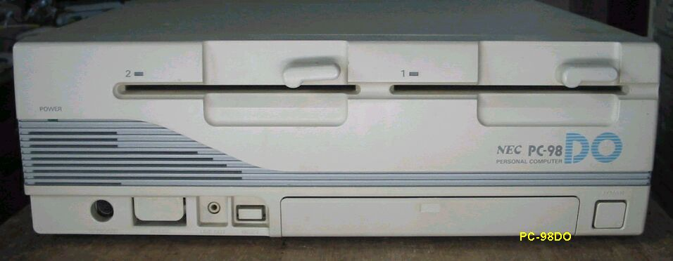
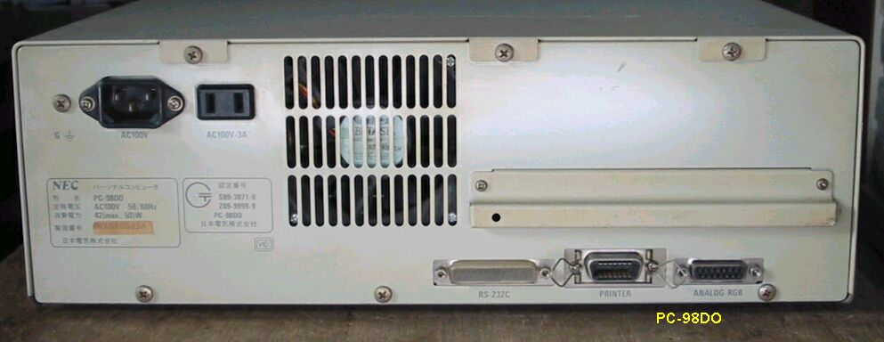

PC-98DO
PC98DOには、ザイログ社の８ビットMPU-Z80互換、μPD7008AC-8も搭載されており、 PC88時代の８ビットソフトも動き、
8086相当のV30と切り替えが可能で、 当時のあらゆるゲームが楽しめたらしい。
PC-98DOの正面

PC-98DOの裏面

PC-98DOの主な仕様
型 名 ：PC-98DO(88モード)
価 格 ：298000
発表日 ：84/06
出荷日 ：84/06
CPUクロック ： (N)μPD7008AC4/8MHz切り替え
ROM ： (N)N88-BASIC他128KB
標準RAM ： 192KB
最大ユーザーズメモリ ： (N)192KB
グラフィックVRAM容量 ： (N)48KB
グラフィックVRAM画素数： (N)640*200
グラフィックVRAM色数 ： (N)512色中8色1画面(最大モノクロ640*2003画面)
サウンドVRAM ：
テキストVRAM ： 4KB
拡張スロット数 ： 0(使用不可)
標準実装ドライブ FDD ：5インチ1M/320KFDD2-DRIVE
内蔵インタフェースコネクタ：プリンタI/F アナログCRTI/F
漢字 ：標準:第一、第二、拡張
サウンド機能 ：標準実装
カレンダ時計 ：μPD4990使用年サポートあり
ＶＣＣＩ適合 ：基準レベル0
使用条件 電圧 ：AC100V±10%
周波数：50/60
温度 ：10～35
湿度 ：20～80%(結露なし)
消費電力 標準 (W) ：42
最大 (W) ：50
エネルギー消費効率 (W) ：42
外形寸法 本 体 (mm) (W)：380 (D)：335 (H)：128
キーボード(mm) (W)：435 (D)：180 (H)：34
重量 本体 (Kg) ：8.7
型 名 ：PC-98DO(98モード)
価 格 ：298000
発表日 ：89/06
出荷日 ：89/06
CPUクロック ： (N)V308/10MHz切り替え
ROM ： (N)BIOS及びN88-BASIC(86)96KB
標準RAM ： 640KB
最大ユーザーズメモリ ： (N)2.6MB
グラフィックVRAM容量 ： (N)256KB
グラフィックVRAM画素数： (N)640*400
グラフィックVRAM色数 ： (N)4096色中16色2画面
サウンドVRAM ：
テキストVRAM ： 12KB
拡張スロット数 ： 1
拡張スロット電源容量 + 5V ：0.8A
+12V ：0.06A
-12V ：0.07A
標準実装ドライブ FDD ：5インチ1M/640KFDD2-DRIVE
内蔵インタフェースコネクタ：プリンタI/F RS-232CI/F マウスI/F
漢字 ：標準:第一、第二、拡張
サウンド機能 ：標準実装
カレンダ時計 ：μPD4990使用年サポートあり
(2004/01/08記)
変わった98のページに戻る